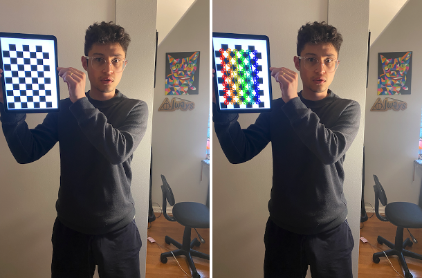

Point cloud generated from calibrated 2D image using Zhang's method and MiDaS dense prediction transformer. Rendered with Open3D showing normal point cloud,
vertex normal estimates, and z-coordinate gradient.

Creating point cloud from calibrated single-view monoculuar 2D-image by using MiDaS depth map and configuring Q-matrix from intrinsic camera parameter K-matrix.
Rendered in CloudCompare for virtual-camera trajectory

Calibrating camera using Zhang's method with 6x9 OpenCV checkerboard. This helped me obtain intrinsic and extrinsic camera parameters required for 3D transformations.
|
"Walking" through a 2D image that was transformed into a point cloud and rendered in Oculus virtual reality headset. A lot of fun!

Google's MediaPipe used to extract human pose landmarks. By far the most fun framework, yet has limitations.
Tensorflow Movenet was used in other projects for multiple human landmark detections and estimations.

Interactive heat map and cluster map of Pittsburgh traffic. Extracted road data from .gov archive data.
Folium python package was used heavily to create the visualization.

Monocular motion tracking of all objects that move.
Basic approach: compare previous frame's contours with current frame's contours and display the difference with bounding box.

Using DeepFace neural networks to predict age, gender, race, and emotion.

Selfie segmentation with Holistic Pose Estimation (thank you MediaPipe) produced impressive results at an extremely high frame rate.

AI in-painting to give a 3D effect. Little manipulation from original code, but it was a fun exercise to follow along.

Some basic computer vision tasks including: color segmentation, edge detection, contour detection, thresholding, etc.
Sliding scale Canny used above. OpenCV was heavily used in these projects as well as other projects.

Stereoscopic camera used to track object's 3-dimensional position over (T) time by obtaining disparity-to-depth measurements as opposed to monocular work with depth maps.